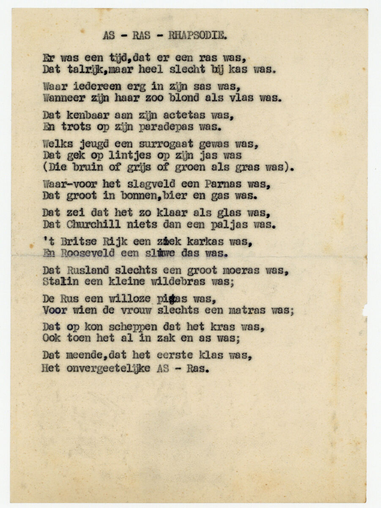
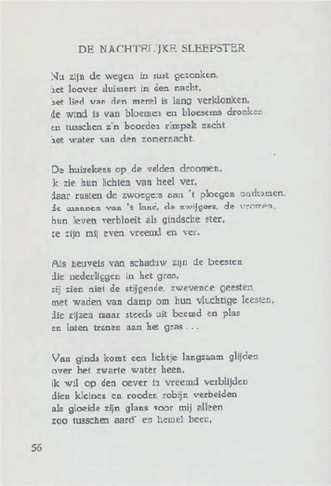

Soorten poëzie
Poëzie is een breed en divers genre met verschillende stijlen en vormen. Er worden er paar van deze stijlen en vormen aan je geintroduceerd.
Stijlen en vormen
- Lyrische poëzie: Uitdrukking van persoonlijke gevoelens en emoties. Zijn vaak kort en intens, met een sterk subjectief karakter. Voorbeelden hiervan zijn sonnetten, odes en elegieën.
- Epische poëzie: Is de verhalende vorm van poëzie, vaak met een heldhaftige of uitgebreide verhaallijn. Het zijn lange gedichten die epische verhalen vertellen, zoals de Ilias en de Odyssee van Homerus.
- Narratieve poëzie: Poëzie met een duidelijke verhaallijn en plot. Kan kort of lang zijn en vaak dramatisch of verhalend van aard zijn.
- Satirische poëzie: Gebruikt humor, ironie en sarcasme om maatschappelijke kwesties of menselijke tekortkomingen aan te kaarten; Kritisch en spottend van aard.
- Vrije vers: Heeft geen vaste metrische of rijmschema's. Gebruikt vaak natuurlijke spreektaal en legt minder nadruk op traditionele poëtische elementen.
Voorbeelden

Dit is een voorbeeld van een satirisch gedicht

Dit is een voorbeeld van een narratief gedicht